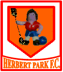

La indecisión es la llave a la
flexibilidad
|
|
 | |
|
La indecisión es la llave a la
flexibilidad |
|
|
|
********************************************************************************************* Newer news can be found on scotlandnews |
| Inca sights around Cusco, Peru, May 17, 2005. | ********************************************************************************************* First of all, let's get the classic Cusco photo out of the way, since you've seen it a million times before. Cusco was the Inca capital, then the Spaniards built over it. See the symbolism?
We hiked around the outskirts of the town to see some of the Inca ruins and, of these, the most impressive is Sacsayhuaman (pronounced, as everyone loves to tell you, Sexy Woman).
This fort, on a hill overlooking the town and only 10 minutes walk from the plaza, was the site of one of the last battles the Incas staged against the Spanish. Can you guess who won?
Ok, I'll tell you, the Spanish did.
Japanese tourists...
|
| Sacred Valley, Peru, May 14, 2005. | ********************************************************************************************* Travelling from Puno to Cusco (gateway to Macchu Picchu) we passed through some of the Inca Valle Sagrado (Sacred Valley). If Lago Titicaca is the mythological home of the Inca, then the Sacred Valley was the heartland of their huge empire that stretched from Ecuador down to Chile. Some of their most important ruins are situated there; but first yet another stop to check out the mountains.
Catherine was feeling more positive about indigenous animal species, so she stopped off to feed this vicu�a. No injuries to either party this time.
The team then stopped at one of the main Inca temples (and they had a lot of those).
This 15 m wall is the central wall of the Sun Temple - the roof would have sloped down to where the tourists are standing, supported on the way down atop the cylindrical pillars, of which just the first metre remains. The reason there are now other gringos in our photos is that we are now travelling on the public buses, just like regular people. How we miss the yellow school bus. The top 12 m of the wall is made of adobe brick - a mix of mud, cactus juice, and grass - still standing after 600 years. Elsewhere in the complex, this alley way is aligned to be exactly north-south on the winter solstice, which is in June down here.
The little Inca dudes were obsessed with the winter solstice; engineer Ferg thinks it may a little out of plumb. When the Inca priests thought there were rough times coming, they would plant a greater harvest ahead of time. This is their huge central granary - there are approximately 150 of these storage silos on this site.
This is yet another Spanish church, build on top of an Inca temple as a symbol of the Conquistadores' power. It's such a richly-decorated one that even Ferg was tempted to cross its threshold. It is called the Sistine of the Americas due to its lavish 24-carat gold interior, massive paintings, and decorated ceiling. No photography allowed inside, so this is all you get.
|
| Simon goes home, Copa-Copacabana, Bolivia, May 13, 2005. | ********************************************************************************************* Der Commandante has left the building. We put him on the 46A bus in Bolivia.
Many concerned readers have written to enquire as to why Simon is being written out of the trip, given his centre-stage role throughout. The sad truth is that his bottle of 500 Ibuprofen was nearly empty, so he had to return to Ireland to refill his prescription. Expect to see Don Simon star in future productions such as 'Simon and Shane drive a decrepid Ford Transit to Morocco' and the currently in-production 'Simon wrecks eastern Europe.' At the last minute, the airline refused to carry all his luggage, so here he is on the dock at Buenos Aires preparing to walk to Ireland. Missing you already, man.
|
| Isla del Sol, Lago Titicaca, Bolivia, May 11-12, 2005. | ********************************************************************************************* A few days after seeing the Peruvian islands of Lago Titicaca, we decided to see the islands on the Bolivian side of the lake. Based out of Copa-Copacabana (no, a different one, the one in the song you're thinking of is in Mexico), Isla del Sol is the island of the Inca creation myth. This island is the sun and the one next to it is the moon, or something. It seemed a little vague when we asked. Anyway, it's a nice place. On the hike to the jetty, Nicolas the trout farmer rowed us out to see his fish.
This is the Temple of the Sun on the island. So little is known about what the Incas did, that your guess is as good as ours.
Place looks wrecked. As Inca ruins go, it's nothing on the Macchu Picchu stuff. |
| On Lago Titicaca, Peru, 8-9 May 2005. | ********************************************************************************************* The team spent about a week on or around the highest navigable lake in the world (whatever that means). We visited the floating islands of Uros...
The islands are made of reeds to a depth of about 2.5 m. The Uros people survive by fishing and having gawping tourist like ourselves come and gape at their lives. This was a kind of voyeuristic tourism with which none of us was quite comfortable. Still, these people pay no taxes, live in a beautiful place, and have a life expectancy of 85 years. Also, if they get bored of the view, they can even move the island. We were then herded back onto our gringo-trail boat, leaving the peaceful Uros people to their simple crafts, or Internet spreadbetting, or whatever they do when the tourists go away. On the next island - Amanyani - things got rather surreal. We played football at an altitude of 4,000 m. That is, four kilometres above the level of our beloved home stadium of Herbert Park. Herbert Park Rangers fielded two regulars. Jim can be seen here defending against the head of the family with which we stayed.
Catherine clears the lines in fine style.
As if that wasn't enough, the team of gringos held the team of thin-air-acclimatised Peruvians to a 2-2 draw. Wait - the amazing parts are still to come... Amazing Part No. 1: Fergal O'Mahony played, and played a stormer at the back, even taking a turn as a one-handed goalkeeper.
Amazing Part No. 2: Both of the gringo goals were scored by Simon Barry. Sadly, no photographic record exists of this feat. We celebrated by climbing the highest mountain on the island immediately afterwards. Another romantic sunset for everyone, but we'll spare you the photo. Wait, wait, there's more. That night we went to the local hall and danced our ponchos off.
Ferg was the disco dancer. The altitude must have been effecting him.
The next day we went to the island of Taquile. To everyone's relief, nothing dramatic happened.
|
| Catherine's altitude sickness, 6 May 2005. | ********************************************************************************************* At an altitude of 4,690 m above sea level on the bus from Arequipa to Puno on the shores of Lago Titicaca, Catherine developed a case of altitude sickness. Dizziness, pounding headache, and a loss of feeling in her left arm and both lips. The low point (or, from a journalistic point of view, the high point) was a short bout of puking out the window of a moving bus. Unfortunately, we have no photos of this incident. Once we arrived at the lake (at 3,850 m) she started to recover with the help of coco leaves, western-style medicine, and sleep. By the next day, most of the symptoms had abated - all except the embarrassment. |
| Alpaca incident, Arequipa, Peru, 5 May 2005. | ********************************************************************************************* There's nothing soft and cuddly about Alpacas, except their wool. They are, after all, related to the notoriously grumpy camel.
This brief but tense standoff between Catherine, a natural-born city-dweller, and the Alpaca was ended when the latter spat a mouthful of grass at the former. Some days later Catherine had her revenge. They say revenge is a dish best served cold, but not in this case. Catherine ate her Alpaca steak hot and with relish. There's nothing soft and cuddly about Catherine when she's angered. |
| Protest Thursday, Arequipa, Peru, 5 May 2005. | ********************************************************************************************* On the one day, there were two big street demonstrations in the plaza. Early on, the people of the area around Colca Canyon came to town to protest that very little of the monies generated by the tourism in their area was spent in their area. For this reason the roads to Colca Canyon were blockaded and nobody was allowed visit. This was a disappointment for us, as we had intended to trek in the deepest canyon in the world.
The protesters were discreetly observed by the Peruvian Secret Service...
Later in the day, the taxi drivers were protesting about something or other. Taxi drivers, eh? The police ended up tear-gassing these guys after a number of hours. The taxi drivers did, however, have some high calibre support...
|
| Final flying episodes, Chile, 3 May 2005. | ********************************************************************************************* On the last day in the Chilean city of Iquique, Simon, the last pilot in the sky, cruises in over the town to land on the beach...
South America's hardest-working video-editing team once again delivers. This time it's paragliding - while Team South was swanning around Torres del Paine, Team North sweated it out in the deserts of northern Chile. Stunning remote locations, broken cross-country records (and bones), in-air footage, takeoffs - some good, some sketchy, it's all there, check it out at: Chilean Flying |